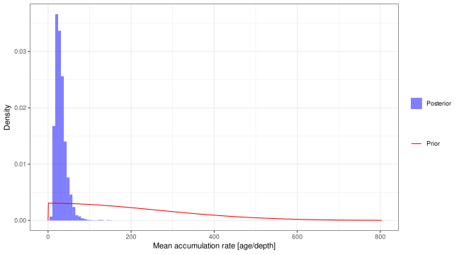
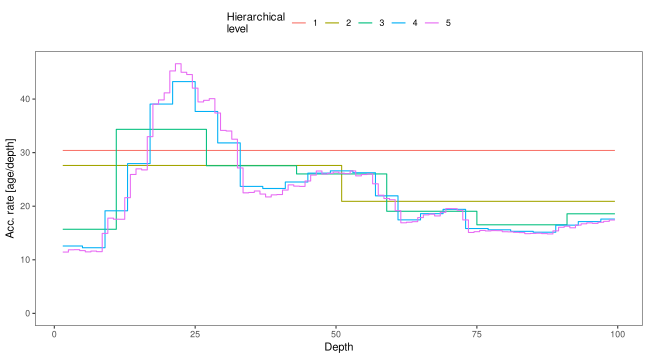
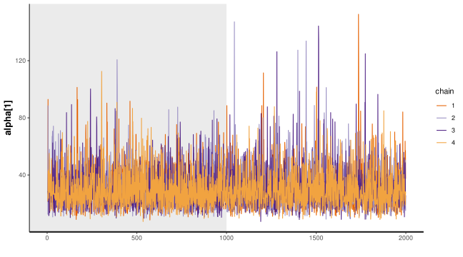

hamstr: Hierarchical Accumulation Modelling with Stan and R.
Andrew M. Dolman 2022-06-20


hamstr implements a Bacon-like (Blaauw and Christen, 2011) sediment accumulation or age-depth model with hierarchically structured multi-resolution sediment sections. The Bayesian model is implemented in the Stan probabilistic programming language (https://mc-stan.org/).
Installation
hamstr can be installed directly from Github
if (!require("remotes")) {
install.packages("remotes")
}
remotes::install_github("earthsystemdiagnostics/hamstr", args = "--preclean", build_vignettes = FALSE)Using hamstr
Examples using the example core “MSB2K” from the rbacon package.
Converting radiocarbon ages to calendar ages.
Unlike Bacon, hamstr does not do the conversion of radiocarbon dates to calendar ages as part of the model fitting process. This must be done in advance. hamstr includes the helper function calibrate_14C_age to do this, which in turn uses the function BchronCalibrate from the Bchron package.
Additionally, unlike Bacon, hamstr approximates the complex empirical calendar age PDF that results from calibration into a single point estimate and 1-sigma uncertainty. This is a necessary compromise in order to be able to use the power of the Stan platform. Viewed in context with the many other uncertainties in radiocarbon dates and the resulting age-models this will not usually be a major issue.
The function calibrate_14C_age will append columns to a data.frame with the calendar ages and 1-sigma uncertainties.
MSB2K_cal <- calibrate_14C_age(MSB2K, age.14C = "age", age.14C.se = "error")The approximated calendar age PDFs can be compared with the empirical PDFs with the function compare_14C_PDF
A sample of six dates are plotted here for the IntCal20 and Marine20 calibrations. This approximation is much less of an issue for marine radiocarbon dates, as the cosmogenic radiocarbon signal has been smoothed by mixing in the ocean.
i <- seq(1, 40, by = floor(40/6))[1:6]
compare_14C_PDF(MSB2K$age[i], MSB2K$error[i], cal_curve = "intcal20")+
labs(title = "Intcal20")
compare_14C_PDF(MSB2K$age[i], MSB2K$error[i], cal_curve = "marine20") +
labs(title = "Marine20")
Fitting age-models with hamstr
Age-depth (sediment accumulation) models are fit with the function hamstr. A vectors of depth, observed age and age uncertainty are passed as arguments to the function.
hamstr_fit_1 <- hamstr(depth = MSB2K_cal$depth,
obs_age = MSB2K_cal$age.14C.cal,
obs_err = MSB2K_cal$age.14C.cal.se,
# the seed argument for the sampler is set here so that
# this example always returns the same numerical result
stan_sampler_args = list(seed = 1))The default plotting method shows the fitted age models together with some diagnostic plots: a traceplot of the log-posterior to assess convergence of the overall model; a plot of accumulation rate against depth at each hierarchical level; the prior and posterior of the memory parameter. By default the age-models are summarised to show the mean, median, 25% and 95% posterior intervals. The data are shown as points with their 1-sigma uncertainties. The structure of the sections is shown along the top of the age-model plot.
plot(hamstr_fit_1)
A “spaghetti” plot can be created instead of shaded regions. This shows a random sample of iterations from the posterior distribution (realisation of the age-depth model). This can be slow if lots of iterations are plotted, the default is to plot 1000 iterations. Additionally, plotting of the diagnostic plots can be switched off.
plot(hamstr_fit_1, summarise = FALSE, plot_diagnostics = FALSE)
Mean accumulation rate
There is no need to specify a prior value for the mean accumulation rate (parameter acc.mean in Bacon) as in hamstr, this overall mean accumulation rate is a full parameter estimated from the data.
By default, hamstr uses robust linear regression (MASS::rlm) to estimate the mean accumulation rate from the data, and then uses this to parametrise a prior distribution for the overall mean accumulation rate. This prior is a half-normal with zero mean and standard deviation equal to 10 times the estimated mean. Although this does introduce a slight element of “double-dipping”, using the data twice (for both the prior and likelihood), the resulting prior is only weakly-informative. The advantage of this approach is that the prior is automatically scaled appropriately regardless of the units of depth or age.
This prior can be checked visually against the posterior. The posterior distribution should be much narrower than the weakly informative prior.
plot(hamstr_fit_1, type = "acc_mean_prior_post")
Setting the thickness, number, and hierarchical structure of the discrete sections
One of the more critical tuning parameters in the Bacon model is the parameter thick, which determines the thickness and number of discrete down-core sediment sections modelled. Finding a good or optimal value for a given core is often critical to getting a good age-depth model. Too few sections and the resulting age-model is very “blocky” and can miss changes in sedimentation rate; however, counter-intuitively, too many very thin sections can also often result in an age-model that “under-fits” the data - a straight line through the age-control points when a lower resolution model shows variation in accumulation rate.
The key structural difference between Bacon and hamstr models is that with hamstr the sediment core is modelled at multiple resolutions simultaneously with a hierarchical structure. This removes the need to trade-off smoothness and flexibility.
The parameter K controls the number and structure of the hierarchical sections. It is specified as a vector, where each value indicates the number of new child sections for each parent section at each finer hierarchical level. E.g. c(10, 10) would specify 10 sections at the coarsest level, with 10 new sections at the next finer level for each coarse section, giving a total of 100 sections at the highest / finest resolution level. c(10, 10, 10) would specify 1000 sections at the finest level and 3 hierarchical levels of 10, 100 and 1000 sections.
The structure is hierarchical in the sense that the modelled accumulation rates for the parent sections act as priors for their child sections; specifically, the mean accumulation rate for a given parent is the mean of the gamma prior for its child sections. In turn, the overall mean accumulation rate for the whole core is itself a parameter estimated by the fitting process. The hierarchical structure of increasing resolution allows the model to adapt to low-frequency changes in the accumulation rate, that is changes between “regimes” of high or low accumulation that persist for long periods.
By default K is chosen so that the number of hierarchical levels, and the number of new child sections per level, are approximately equal, e.g. c(4, 4, 4, 4). The total number of sections at the finest level is set so that the resolution is 1 cm per section, up to a total length of 900 cm, above which the default remains 900 sections and a coarser resolution is used. This can be changed from the default via the parameter K.
For a given shape parameter acc_shape, increasing the number of modelled hierarchical levels increases the total variance in the accumulation rates at the highest / finest resolution level. From hamstr version 0.5.0 and onwards, the total variance is controlled by modifying the shape parameter according to the number of hierarchical levels.
Getting the fitted age models
The fitted age models can be obtained with the predict and summary methods. iter is the iteration of the sampler, or “realisation” of the age model.
predict(hamstr_fit_1)
#> # A tibble: 388,000 x 3
#> iter depth age
#> <int> <dbl> <dbl>
#> 1 1 1.5 4547.
#> 2 1 2.52 4559.
#> 3 1 3.54 4573.
#> 4 1 4.56 4581.
#> 5 1 5.58 4591.
#> 6 1 6.60 4597.
#> 7 1 7.62 4609.
#> 8 1 8.65 4627.
#> 9 1 9.67 4644.
#> 10 1 10.7 4660.
#> # ... with 387,990 more rowssummary returns the age model summarised over the realisations.
summary(hamstr_fit_1)
#> # A tibble: 97 x 13
#> depth idx par mean se_mean sd `2.5%` `25%` `50%` `75%` `97.5%` n_eff
#> <dbl> <dbl> <chr> <dbl> <dbl> <dbl> <dbl> <dbl> <dbl> <dbl> <dbl> <dbl>
#> 1 1.5 1 c_age~ 4516. 1.59 64.0 4375. 4478. 4521. 4560. 4631. 1616.
#> 2 2.52 2 c_age~ 4529. 1.45 60.0 4399. 4492. 4533. 4569. 4638. 1703.
#> 3 3.54 3 c_age~ 4541. 1.32 56.4 4422. 4506. 4545. 4579. 4645. 1842.
#> 4 4.56 4 c_age~ 4554. 1.19 53.7 4442. 4521. 4557. 4590. 4653. 2037.
#> 5 5.58 5 c_age~ 4567. 1.07 51.0 4462. 4534. 4569. 4601. 4661. 2261.
#> 6 6.60 6 c_age~ 4579. 0.966 48.7 4480. 4548. 4581. 4612. 4670. 2542.
#> 7 7.62 7 c_age~ 4592. 0.882 47.0 4496. 4562. 4594. 4624. 4680. 2835.
#> 8 8.65 8 c_age~ 4605. 0.815 44.9 4512. 4576. 4606. 4635. 4691. 3030.
#> 9 9.67 9 c_age~ 4618. 0.758 42.9 4530. 4590. 4619. 4647. 4701. 3201.
#> 10 10.7 10 c_age~ 4631. 0.718 41.5 4549. 4603. 4631. 4659. 4712. 3353.
#> # ... with 87 more rows, and 1 more variable: Rhat <dbl>The hierarchical structure of the sections makes it difficult to specify the exact depth resolution that you want for your resulting age-depth model. The predict method takes an additional argument depth to interpolate to a specific set of depths. The function returns NA for depths that are outside the modelled depths.
These interpolated age models can summarised with the same function as the original fitted objects, but the n_eff and Rhat information is lost.
summary(age.mods.interp)
#> # A tibble: 101 x 8
#> depth mean sd `2.5%` `25%` `50%` `75%` `97.5%`
#> <dbl> <dbl> <dbl> <dbl> <dbl> <dbl> <dbl> <dbl>
#> 1 0 NaN NA NA NA NA NA NA
#> 2 1 NaN NA NA NA NA NA NA
#> 3 2 4522. 61.9 4387. 4484. 4527. 4564. 4635.
#> 4 3 4535. 58.2 4410. 4498. 4538. 4574. 4641.
#> 5 4 4547. 55.1 4431. 4513. 4550. 4584. 4648.
#> 6 5 4559. 52.4 4450. 4527. 4562. 4595. 4656.
#> 7 6 4572. 50.0 4469. 4540. 4573. 4606. 4665.
#> 8 7 4584. 47.9 4485. 4554. 4586. 4616. 4674.
#> 9 8 4597. 46.1 4502. 4567. 4598. 4627. 4683.
#> 10 9 4609. 44.1 4518. 4581. 4610. 4639. 4694.
#> # ... with 91 more rowsGetting and plotting the accumulation rate
The down-core accumulation rates are returned and plotted in both depth-per-time, and time-per-depth units. If the input data are in years and cm then the units will be cm/kyr and yrs/cm respectively. Note that the acc_mean parameter in both hamstr and Bacon is parametrised in terms of time per depth.
plot(hamstr_fit_1, type = "acc_rates")
#> Joining, by = "idx"
#> Joining, by = "depth"
summary(hamstr_fit_1, type = "acc_rates")
#> Joining, by = "idx"
#> # A tibble: 192 x 13
#> depth c_depth_top c_depth_bottom acc_rate_unit idx tau mean sd `2.5%`
#> <dbl> <dbl> <dbl> <chr> <dbl> <dbl> <dbl> <dbl> <dbl>
#> 1 1.5 1.5 2.52 depth_per_ti~ 1 0 118. 84.2 32.0
#> 2 2.52 2.52 3.54 depth_per_ti~ 2 0 112. 73.8 32.4
#> 3 3.54 3.54 4.56 depth_per_ti~ 3 0 110. 72.5 33.5
#> 4 4.56 4.56 5.58 depth_per_ti~ 4 0 105. 61.4 36.1
#> 5 5.58 5.58 6.60 depth_per_ti~ 5 0 106. 64.3 36.5
#> 6 6.60 6.60 7.62 depth_per_ti~ 6 0 107. 68.4 35.2
#> 7 7.62 7.62 8.65 depth_per_ti~ 7 0 96.7 48.6 38.5
#> 8 8.65 8.65 9.67 depth_per_ti~ 8 0 97.0 51.7 36.3
#> 9 9.67 9.67 10.7 depth_per_ti~ 9 0 98.4 55.6 35.0
#> 10 10.7 10.7 11.7 depth_per_ti~ 10 0 94.9 51.3 35.5
#> # ... with 182 more rows, and 4 more variables: `25%` <dbl>, `50%` <dbl>,
#> # `75%` <dbl>, `97.5%` <dbl>Diagnostic plots
Additional diagnostic plots are available. See ?plot.hamstr_fit for options.
Plot modelled accumulation rates at each hierarchical level
plot(hamstr_fit_1, type = "hier_acc")
Plot memory prior and posterior
As for this example the highest resolution sections are approximately 1 cm thick, there is not much difference between R and w.
plot(hamstr_fit_1, type = "mem")
Other rstan functions
Within the hamstr_fit object is an rstan object on which all the standard rstan functions should operate correctly.
For example:
rstan::check_divergences(hamstr_fit_1$fit)
#> 0 of 4000 iterations ended with a divergence.
rstan::stan_rhat(hamstr_fit_1$fit)
#> `stat_bin()` using `bins = 30`. Pick better value with `binwidth`.
The first alpha parameter is the overall mean accumulation rate.

References
Blaauw, Maarten, and J. Andrés Christen. 2011. Flexible Paleoclimate Age-Depth Models Using an Autoregressive Gamma Process. Bayesian Analysis 6 (3): 457-74. doi:10.1214/ba/1339616472.
Parnell, Andrew. 2016. Bchron: Radiocarbon Dating, Age-Depth Modelling, Relative Sea Level Rate Estimation, and Non-Parametric Phase Modelling. R package version 4.2.6. https://CRAN.R-project.org/package=Bchron
Stan Development Team (2020). RStan: the R interface to Stan. R package version 2.21.2. http://mc-stan.org/.